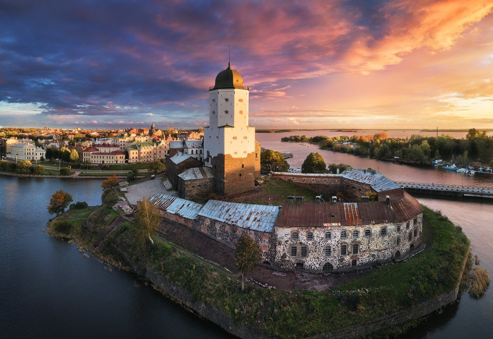

Выборы зон в маршруте
Хибины - сокровища Кольского полуострова
Выехав рано утром из Мурманска, вы отправитесь встречать рассвет в заполярных горах, одних из древнейших в мире. По нашему продвинутому маршруту вы посетите горный массив Хибины, летом посетите самый северный ботанический сад в России, зимой — покатаетесь на снегоходах и полюбуетесь сказкой Снежной деревни. И в любое время года вам откроются чарующие пейзажи с вершины Айкуайвенчорра, а народно-этническая станция поразит богатством хибинских минералов.
вершина Айкуайвенчорра
народно-этническая станция
Путь к сердцу Кольского
Гид заберет вас от места вашего проживания в Мурманске — и вы отправитесь к крупнейшему горному массиву на полуострове. В летний период поездка начинается в 9 утра, в зимний — в 7, так как прекрасный северный рассвет стоит встречать именно в Хибинах.
Подъем на вершину горы
Прибыв в Кировск, расположенный у самого подножия Хибин, поднимемся по канатной дороге на вершину горы Айкуайвенчорр. Со смотровой площадки вы увидите панорамы окрестностей, белоснежные склоны, сотни озер и камни, похожие на мороженое. Я покажу отличные места для фотосессий и поделюсь любопытными историями края. А когда спустимся вниз, предложу перекусить в отличном местном заведении.
Потрясающая станция - Музей камня
В Хибинах обнаружено более 500 видов минералов, а это в разы больше, чем на любом другом месторождении мира. Рай для коллекционеров и любителей камня! В музее вы увидите редкие минералы, включая уникальный эвдиалит, или «лопарскую кровь». А также откроете интересные факты о камнях и их свойствах.
Идеальный день в Карелии
Вы проедете по одному из самых красивых маршрутов в окрестностях Петрозаводска. Посетите заповедник Кивач, гору Сампо и курорт Марциальные воды. Исследуете особенности северной природы, узнаете, что известно о древних ландшафтах Карелии и культуре региона в дохристианскую эпоху. А также услышите рассказы о знаковых личностях, самобытные легенды и забавные истории.
курорт Марциальные воды
заповедник Кивач
Карельские зайцы
Первая локация на нашем маршруте — «Долина Зайцев». Появилась она не так давно, но, тем не менее, очень любопытна: пока вы фотографируетесь с карельскими зайцами, я расскажу о том, почему они здесь появились и кто их придумал.
Заповедная Карелия
Затем вы отправитесь в один из старейших заповедников России и первый в регионе. В этом символичном месте оцените красоту лесных просторов и второго по высоте равнинного водопада Европы. Пройдете по застывшей лаве и проникнетесь сюжетами легендарной «Калевалы». А на горе Сампо выясните, как по современному рельефу представить Карелию миллионы лет назад, и поймете, в чем уникальность ее ландшафтов.
История края в интересных деталях
Вы узнаете о визитах в эти места поэта Державина, императоров Александра I и Александра II. Услышите о наследии Петра I. Откроете колоритные местные предания, незаурядные факты и смешные истории, которые помогут по-настоящему понять характер Карелии. А также посетите бальнеологический и грязевый курорт Марциальные воды, где узнаете об особых свойствах местной воды и сможете ее попробовать. А после экскурсии можно заехать в лес за грибами и ягодами, у нас сейчас сезон!
Архангельск столица Русского Севера
Архангельск — первые морские ворота страны и порт, откуда исследователи Арктики отправлялись в экспедиции. В авто-пешеходном путешествии мы поговорим о значении города и самых интересных событиях в его более чем 400-летней истории. В нашей программе: район, где появились первые судоверфи, самый северный российский небоскрёб, истории о купцах, контрабандистах и полярниках, легенда об «Алых парусах» Грина и многое другое!
смотровая площадка
памятники
За 2,5 часа вы увидите «открыточные» виды Архангельска: памятники, старинную архитектуру, набережную Северной Двины, исторические кварталы и улицы. Кроме того, пройдём там, где обычно не бывают путешественники. Вы узнаете, где в Архангельске промышляли контрабандисты и чем именно они торговали. И всё это в атмосфере непередаваемого местного колорита, воспетого сказочником Степаном Писаховым. В Архангельске берёт начало не только торговля с зарубежными купцами, но и освоение Арктики. Отсюда уходили экспедиции знаменитых полярников, таких как Седов и Русанов — они подарили миру открытия в самой северной части Земли. Как в 18 веке, так и в наши дни город играет важнейшую роль в организации научно-исследовательских экспедиций по изучению Арктики. Об этом и не только я буду рада вам рассказать при встрече..
Ростов-на-Дону город солнца и цветов
Вы погрузитесь в яркий южный колорит Ростова и удивитесь разноплановости его исторического центра. Богатые особняки местной знати соседствуют здесь с увитыми виноградниками дворами-колодцами, модернистские дома — с советскими монументальными памятниками. Я помогу ощутить самобытную атмосферу города и расскажу о его прошлом и настоящем.
фонтан Атланты
стадион Ростов Арена
«Визитные карточки» Ростова
Вы познакомитесь с главными архитектурными символами Ростова: зданиями городской думы и государственного банка, домом актрисы Черновой, драматическим «театром-трактором» и музыкальным «театром-роялем». Рассмотрите памятник Воинам-освободителям и фонтан Атланты на центральной площади, оцените современный стадион Ростов Арена и погуляете по Большой Садовой и Пушкинскому бульвару. А также заглянете в подземные переходы и увидите там мозаичные картины, повествующие о местной жизни.
Ростов сквозь столетия
Ростов не обошли стороной главные события XX века. Вы услышите о рабочих забастовках, революции, Гражданской и Великой Отечественной войнах и двух оккупациях. Посетите Вечный огонь и площадь Советов, оцените монументальный памятник Тачанке-ростовчанке и погуляете по уютной набережной города. В завершение заедете в старинный район Нахичевань-на-Дону, основанный переселенцами из Крыма, и увидите первый армянский театр, купеческие особняки и городскую управу. А также по желанию посетите храм Армянской апостольской церкви.
Туапсе - чары Абхазии
Абхазия прекрасна круглый год! Под снежным одеялом или в буйстве зелени — вы влюбитесь в эту страну после нашего путешествия. Мы заедем в курортные городки, по пути к великолепному озеру Рица полюбуемся ущельями и водопадами, а в Новом Афоне посетим храм Симона Канонита и, если захотите, осмотрим громадную пещеру. И конечно, поговорим о культуре, традициях и быте региона.
храм Симона Канонита
колоннада
Курортная Гагра
Первая остановка в исторической части города. Вы рассмотрите знаменитый ресторан «Гагрипш» и услышите о Принце Ольденбургском. Прогуляетесь вдоль парка по набережной и увидите визитную карточку города — Колоннаду.
Сказочная дорога на Рицу
По пути к звезде Кавказа вас ждут истинно абхазские пейзажи: горные реки, утопающие в мшистых лесах, и «Каменный мешок» — величественный Юпшарский каньон. Я раскрою легенды водопадов Мужские и Девичьи слёзы, а у Голубого озера расскажу о его необычном цвете. И конечно, мы увидим озеро Рица — вы убедитесь, что в жизни оно даже прекраснее, чем на фото.
Новый Афон
В первую очередь посетим Симоно-Кананитский монастырь: в 1875 году его основали русские монахи, пришедшие из монастыря святого Пантелеимона со Святой горы Афон в Греции. Прогуляемся в городском парке с прудами, где обитают черные и белые лебеди, и поговорим об истории этого места. Увидим рукотворный водопад, над которым расположилась сказочная железнодорожная станция Псхырдзха. А если захотите, направимся в Ново-Афонскую пещеру — природный подземный дворец.
Дербент - Город историй
Дербент — самый древний город России, сочетающий дух прошлого и насыщенную современную жизнь. Вы погуляете по крепости Нарын-кала и старинным улицам «магалам». А чтобы понять, как живут дербентцы сегодня, отправитесь на местный Арбат!
Арбат
улицы «магалам»
Погружение в прошлое
Знакомство с Дербентом начнётся с его визитной карточки — крепости Нарын-кала. Вы услышите её многовековую историю и узнаете, как жили местные правители много веков назад. А также полюбуетесь с высоты потрясающим видом на город и Каспийское море. Осмотрев древнюю цитадель, вы отправитесь гулять по старинным извилистым улочкам «магалам» — они позволят вам погрузиться в жизнь и быт простых дербентцев.
Дербент сегодня
Вы проедете по отреставрированной улице Мамедбекова, увидите современный парк им. Низами Гянджеви и погуляете по «улице счастливых людей» — местному Арбату. По дороге гид расскажет много интересного о традиционных блюдах Дербента, его самобытных обычаях и традициях. А также о знаменитостях, посещавших наш город или живших здесь.
Квест - Нетуристический Петербург
Мы поможем вам отыскать такие скрытые места города, которые открываются даже далеко не всем местным жителям. На этой необычной и живой прогулке, разгадывая задание за заданием и таким хитрым способом находя новые локации, вы сможете глубже прочувствовать характер и быт Санкт-Петербурга.
роскошные парадные
креативные и арт-пространства
По следам местных жителей
Мы с любовью к нашему городу составили для вас увлекательную игру-прогулку таким образом, чтобы эстетическое наслаждение Петербургом идеально дополнялось информативной частью, а сама прогулка стала настоящим приключением! Вы увидите:
- настоящий непарадный Санкт-Петербург
- места, которые мелькали в фильмах, сериалах и клипах
- дворы-колодцы и системы проходных дворов
- роскошные парадные
- креативные и арт-пространства
- уютные улочки и переулочки
- и многое-многое-многое другое
Великий Новгород - древняя столица Севера Руси
Великий Новгород был одним из богатейших городов средневековой Европы и колыбелью русской государственности. Вы погуляете по Кремлю и Торговой стороне, услышите о купцах и князьях. Расшифруете особенности местной архитектуры, прикоснетесь к древней истории, легендам и сказаниям. Всё это — в легком и доступном формате!
Торговая сторона
местная «Пизанская башня»
Кремль и не только
Вы увидите главные достопримечательности Кремля: Софийский собор 11 века, резиденцию новгородских владык и местную «Пизанскую башню» Часозвоню. А еще мы осмотрим комплекс Ярославово дворище, прогуляемся по древнему торгу и полюбуемся набережной реки Волхов. Встретим скульптуру туристки, поговорим о «заморском» храме Параскевы Пятницы и о других церквях домонгольского периода.
Увлекательные истории
Я расскажу, почему новгородцы называли свою крепость «детинцем» и как на кресте самого древнего храма России окаменел голубь. Где прятали свои сокровища местные владыки и как ставили единственный в стране памятник Тысячелетию России. А на Торговой стороне вы услышите о хитростях новгородских и ганзейских купцов, о шумном вече и о храмах, что «кустом стоят».
Выборг - королевская дорога по парку Монрепо
Фактурные гранитные скалы, тенистый сосновый лес и изящные постройки, отражающиеся в водах залива — всё это пейзажный парк Монрепо. На прогулке вы познакомитесь с красивейшим уголком в окрестностях Выборга, встретите легендарного рунопевца, пройдете по китайскому мостику и услышите историю знаменитой семьи Николаи.
парк Монрепо
храм Нептуна
Тропами Монрепо — от рунопевца до храма Нептуна
Мы исследуем самые живописные дорожки скального парка, поднимемся на покрытые мхом валуны и вдохнем полной грудью ароматы хвои. Шаг за шагом отыщем скрытые архитектурные диковинки Монрепо, которые идеально вписываются в лесной ландшафт: уютную беседку на вершине горы и храм Нептуна, романтичный замок-часовню Людвигсбург на обрывистой скале и белоснежные китайские мостики. Вы вступите на поляну, где обнаружите каменного дракона, увидите остров Любви и остров Смерти. По извилистой лесной тропе дойдете до скульптуры героя «Калевалы», рунопевца Вяйнямёйнена с финскими гуслями «кантеле» на коленях. И, конечно, поймете, почему в Монрепо соседствуют настолько непохожие друг на друга причудливые объекты.
Романтичные истории семьи фон Николаи
Мы поговорим не только о природе Монрепо, но и о его философии. Вы узнаете о поэте и писателе Людвиге Генрихе фон Николаи, который купил усадьбу в 18 веке и, очарованный лаконичной красотой северной природы, решил превратить её в английский парк. В каждом уголке Монрепо вы увидите воплощение главной цели Николаи — не подчинить, а вежливо дополнить природу «затеями», тропинками, скамейками, создавая пространство для «фантазии, искусства, чувства». А в восточной части парка, у старинного обелиска, мы поговорим о трогательной истории любви Пауля и Александрины Симплиции.
Знакомьтесь - Владивосток!
Владивосток — сердце Приморского края. Я сделаю всё, чтобы вы полюбили его и запомнили надолго. Покажу знаковые места исторического центра и лучшие смотровые площадки. Расскажу удивительные факты о прошлом и настоящем города. А еще, на правах участника общества коллекционеров, помогу прикоснуться к оригинальным артефактам разных эпох.
смотровые площадки
Токаревский маяк
бухта Стеклянная
Корабельная набережная и смотровые площадки
Вы побываете на знаменитой Корабельной набережной, где услышите историю основания Владивостока. Я покажу артефакты, связанные с этим временем: фотографии, открытки и деньги царских времен. Далее мы отправимся на смотровые площадки: Орлиное гнездо, Бурачка и Крестовая сопка. С них открываются великолепные панорамы на город, окружающий его архипелаг, Амурский и Уссурийский заливы.
Токаревский маяк и бухта Стеклянная
Мы не ограничимся центром Владивостока и посетим живописные места за его пределами. Вы погуляете по знаменитому Стеклянному пляжу, усеянному разноцветными стеклами, и узнаете связанные с ним интересные факты. В завершение оцените «визитную карточку» города — Токаревский маяк. Он подарит изумительный вид на мосты и бухту Золотой Рог.
Неизвестный Улан-Удэ
Вы пройдете по историческому центру, советским и современным кварталам Улан-Удэ. Насладитесь видом на город с высоты птичьего полета, узнаете, почему зимой он весь «в дыму», и раскроете секреты местного характера. Я сделаю все, чтобы вы полюбили Улан-Удэ так же, как когда-то в него влюбился я.
собор XVIII века
смотровая площадка
Самые интересные места города
Я покажу вам местный Арбат, великолепный Свято-Одигитриевский кафедральный собор XVIII века, интересную застройку в стиле «сибирское барокко», уютные узкие улочки, необычные граффити и отлично сохранившиеся дома сталинской эпохи. И, конечно же, мы дойдём до места основания города, откуда открывается потрясающий вид на реку.
Улан-Удэ изнутри
Вы попробуете местный чай с молоком и вкуснейшую национальную кухню, ощутите дыхание Транссиба и узнаете, почему Улан-Удэ кажется гигантским из окна самолета. Кроме того, подниметесь на смотровую площадку дацана Ринпоче Багша и пройдете священный для буддистов круг вокруг храма.
Комсомольск-на-Амуре - прекрасное место для отдыха
Комсомольск-на-Амуре — один из крупнейших в стране центров производства военно-воздушной техники. Вы рассмотрите модели самолетов местного авиационного завода и узнаете, какие модификации они претерпевали за последние десятилетия. А также проедете по главным улицам города и оцените все важнейшие памятники.
народно-этническая станция
музеи
История и знаковые памятники города
Вы узнаете, когда, как и при каких обстоятельствах был образован Комсомольск-на-Амуре, как он связан со Второй мировой войной и почему ему не присвоили заслуженное звание «города трудовой доблести». А также увидите место высадки комсомольцев 10 мая 1932 года, памятник Первостроителям и мемориальный комплекс, посвященный павшим в боях в годы Великой Отечественной войны. Кроме того, раскроете, что в городе делали Гагарин, Маресьев и Путин.
Авиационный и краеведческий музеи
В городском краеведческом музее вы узнаете, в каких невероятно трудных условиях зарождался город и как он рос и развивался. Раскроете особенности археологии, этнографии и природы Приамурья и ощутите самобытность нашего региона. А в современном экспоцентре КНААПО услышите историю местного авиационного завода имени Гагарина и увидите модели производимых в нем самолетов прошлых и нынешних лет.